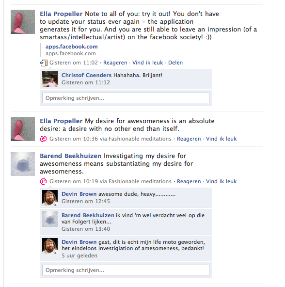
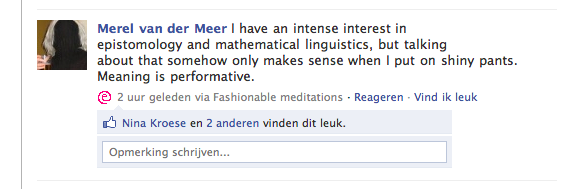
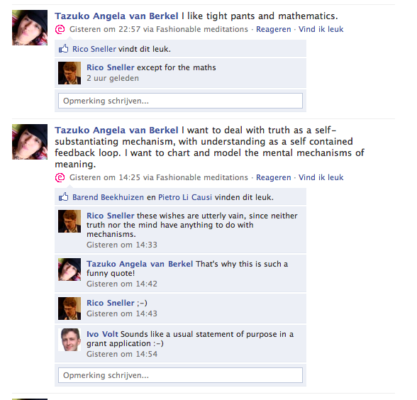
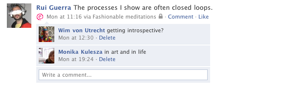
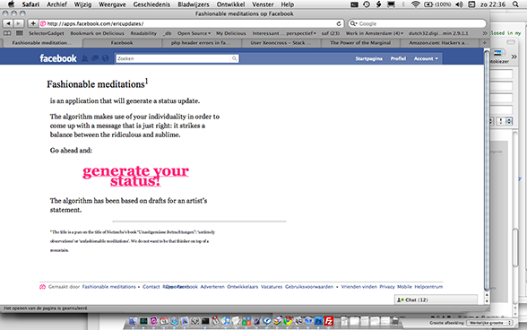

Outline of the concept underlying the work that you wish to develop
This part of the exhibition text strikes a particular chord with me: “bridging a gap between ‘serious’ production such as technology and ‘non-serious’ production such as different forms of art”.
I tend to get confused because the things I like are distributed across both the ‘serious’ and the ‘non-serious’. I like mathematical linguistics and I like to wear blue leggings. Now I am interested in computer models, but earlier on I wanted to be a fashion model.
It is only recently that I have been starting to feel like these combinations are potent. And they are potent at least partly because they are quite funny.
Humour has as of yet hardly been formalised. Partly because it relies on paradoxes and incongruities, although these could theoretically be modelled. But also because jokes take place inbetween people.
I am interested in the question: how can messy (natural language, people) and strict (programming language, computers) systems work together constructively? I would like to work with language generators in the context of digital social interaction.
I also want to question some of the assumptions underlying the ‘semantic’ web currently being pushed by social networks and academics. Since they define semantic as being able to be understood by the computer, it seems as if we will be missing out on the jokes, and therefore on meaningful interaction.
Outline of the research and development plan for the work
I want to make meaning generating machines, autopoetic systems that generate flexible formations of paradoxes.
An important part of my research will be dedicated to getting familiar with the concepts of computational linguistics. There is quite a variety of ways in which one can represent grammars. For this I would like to work with Barend Beekhuizen, a linguist with whom I have worked in the past.
Luckily I do not need to completely reinvent the wheel as there is already a lot of open source code available, like the Natural Language Toolkit for example. Also text generators exist, like the Dada Engine and Kant Generator Pro
For any kind of language generator one needs a grammar and/or ‘corpus’ a structured collection of phrases. I want to base my corpus on my (drafts for) artist’s statements: material that for me is dense with meaning.
Whatever I create I want to try out in the context of my digital social networks. This is potentially a beatiful way of evoking audience participation.
I made a small work as a proof of concept for this approach: ‘fashionable meditations’ allows users to ‘generate’ a status (it actually picks a sentence at random from a predefined collection, like the UNIX fortune program, or SMS services). It went well in the sense that it was used not only by friends but also by friends of my friends, and that commenters on the statuses would react as if the user had come up with the status themselves.
Since existing social networks are centralised and based on proprietary software I want to get involved with open source alternatives. I recently came across Onesocialweb which I find to be a very promising distributed, open alternative to existing networks.
Finally, I would also like to understand the Semantic Web technologies as proposed by the W3C and see if they can be used to represent paradoxical knowledge.
General outline of the scope of the final work
The final work will consist of a collection of applications that can function on their own as web services or connect to various social networks. They are mainly intended as tools to be used together with (social) human interaction, but they could also function autonomously as artistic spambots. The developed code will be released under an open source license.
Simultanously, the process of me and other users using these applications is an ongoing performance in its own right, generating meaning with different social media as the playing ground. This will be documented.
During the residency period I will have to find out how this kind of work can be presented in an exhibition format.
I would also like to disseminate what I am dealing with to the online technological and cultural audience. I already have a Facebook group ‘I like tight pants and software development’, on which I discuss web technology. During the residency period I would like to kickstart a blog ‘I like tight pants and mathematics’, that should challenge the the boundaries of what both groups can handle.
As this is is a social medium too, I find it quite important to come up with an ‘image’ that accurately reflects my preoccupations and values.
Sketches: Fashionable meditations
- 
- 
- 
- 
- 
{kind=link}
Sketches: I like tight pants and mathematics
Motivation for why you would like to work in the context of this particular residency as well as an overview of your interest in the technologies mentioned above
The context of this residency then seems a perfect opportunity to focus on bridging the gap between ‘serious’ and ‘non-serious’ production in my practice, by working with a serious medium in the non-serious context of art. I can focus on software development to an extent that is normally not possible in artistic production, and bring this part of my creative thinking to a whole new level.
In my experience with programming thus far I have seen how much collaboration enhances the experience and I like very much the perspective of doing so in the context of the residency.
Finally, working with open source software right now has become very attractive to me since I realised its cultural possibilities. Open source makes available to the public the entire stack of an operating system, grounded in traditions of academia (funded by the military) and large corporations. The internet also provides ample documentation for this technology and its culture. The whole UNIX stack, and with it, that whole tradition, becomes ours to subvert and appropriate.
Indication of your planning divided between the three labs, i.e. what would you like to develop where.
I imagine time in Amsterdam spent kickstarting my research into and experimentation with computational linguistics. In Eindhoven I am very interested engaging with the artistic team. I could reflect upon what I have made up until that point and examine how this kind of work is best presented in an artistic context. I imagine to give a research presentation there also.
In Bergen I would be very interested in meeting up with other developers to see if my tools are interesting for them and vice versa.
Links to previous work.
My work can be seen on:
http://ericschrijver.nl/
Not directly visible from the front page is:
http://ericschrijver.nl/countryoforigin
a previous software project, a conceptual adventure game (Source code on Github)
Up-to-date CV
Curriculum vitae (selected)
Eric Martijn Schrijver
Born in Amsterdam, 1984
Lives and works in The Hague
education
2002–2006
Interfaculty Image and Sound, BFA in autonomous interdisciplinary arts
Royal Academy of Arts and Royal Conservatoire The Hague
2004-2007
Courses in literature, linguistics and epistomology at Leiden University.
group exhibitions
2009
WinterNest, DCR The Hague, NL
2008
Je m’aime, Van Kranendonk Gallery The Hague, NL
2007
VoorstelVoor, DCR The Hague, NL
2007
Hermitage Helmond Helmond, NL
2006
Media Art Friesland Leeuwarden, NL
solo exhibitions
2006
Sportieve Gewoontes… RedHot The Hague, NL
festivals and manifestations
2010
Winter Garden, Ada Rotterdam, NL
Uncraftivism, Arnolfini Bristol, UK
2009
The Other Site, Het Wilde Weten Rotterdam, NL
2008
Independent Drawing Gig #04, Plastic Factory Incheon, Korea
Square Eyes, CBK Arnhem, NL
Word of Mouth, Ohio University Gallery Athens Ohio, USA
2007
Other Things, De Grafische Showroom Eindhoven, NL
Audiovisuelles Wochenende, Club der Visionaere Berlin, D
Image, Paard Van Troje The Hague, NL
Crossing Border, Theater aan het Spui The Hague, NL
2006
Weerwoord, Paradiso Amsterdam, NL
De Nachten, deSingel Antwerp, BE
commissioned projects
2009-2010
Performer in Spectatorship by Bruno Listopad, Dutch tour, 14 performances
Guest artist at Bruno Listopad’s choreographic research at Danslab, The Hague
2008
Monologue for Holi Cow, a project on Holi Paghwa by Zeebelt Theatre, The Hague
2007
Publication (computer game and user manual) Country of Origin I for Onomatopee, Eindhoven, NL
2006
Installation Dat wilde wout sonder genade for Kunstgebouw South Holland and the Crossing Border Festival, The Hague
Performance and installation for Ben Even Weg, a program on Bas Jan Ader by Zeebelt Theatre, The Hague
grants
Stroom Invest grant, 2008
collections
Several works both in private collections in the Netherlands and in the collection of Kunstgebouw, foundation for culture in the South of Holland
other activities
Lecturer Interaction Design, Royal Academy of Art The Hague.